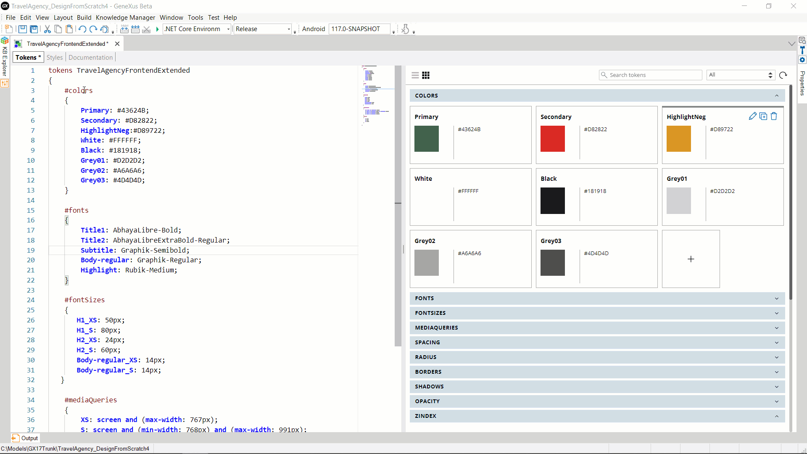

A Token is the most basic element of a Design System that allows you to capture an option for visual or interaction design. A Token allows you to model a platform-agnostic choice of color, typography, spacing, time, media, zindex, border, opacity, or size.
In this way, you can give options for low-level values of your digital product.
Having a Token set for your Design System will allow your product to be more maintainable and consistent in terms of design.
GeneXus incorporates the possibility of defining token sets for a Design System, in a Design System Object
The language is declarative and allows to define Tokens in different groups or categories.
GeneXus provides a textual and a visual representation for the tokens.
The textual representation provides an easy way to edit/share/compare and on the other side, the visual representation allows to understand visually the details of the options given by the tokens.
Both editors are synchronized: what is done in one has an immediate impact on the other.

Setting Tokens to specific values is the core function of the Design System Tokens language.
A Token is defined by two required elements (Name and Value).
The syntax for the Token Name follows the same rules as CSS properties names. There are different values allowed and each Token Group defines which are the valid values.
Each Token is defined within the larger structure that is the set of tokens, and always within a group:
tokens TokensSetName [( option1 [, option2]...)]
‘{’
[option_condition
‘{’]
[#token_group
‘{’
[token_name: { value[ unit ]; | valuewithData; | token_reference; } ] ...
‘}’]…
[‘}’]
‘}’
Where:
TokensSetName: Name given by the developer to the set of token declarations it contains. Currently, only one set of token declarations can be defined in a DSO, but more may be available in the future.
optioni: (Optional) Parameter called "option" and its possible values, according to which the definition of some or all of the tokens can be varied.
option_condition: (Optional) If this condition is met, the definitions of the tokens it contains will be applicable. The condition refers to the parameters (options).
token_group: Name of valid token group. The set of possible groups or types of tokens is predefined:
colors | radius | spacing | borders | shadows | fontSizes | fonts | opacity | zindex | mediaqueries | times | timingfunction
For exceptional cases, the custom group can be used, within which tokens of any type can be defined. It should be used with caution, as the value of a token in this group must match in type with the properties of the classes in which it is used.
token_name: Name of the token that the developer is defining. It is recommended that it have a strong semantic load. It is case insensitive.
value: Value that the token will take if the option_condition is met. It is case insensitive. The value depends on the group. For example, if it is "colors," the value will be hexadecimal or will have RGBA format, or will have the name of a color recognizable by CSS or a Native platform, such as "red," "blue," etc. If it is "mediaQueries" it will be a specific boolean condition: that of the @media rule.
unit: Valid unit of measurement according to the token_group (for "spacing" it could be px, dip, em, %).
valueWithData: Value that the token will take if the option_condition is met and with additional information, such as a description, provided to give more semantics to the definition. It has the format of a JSON Object that only supports the value, description, and info keys at the first level. The info is a JSON object that supports any kind of structure.
token_reference: Reference to a token whose value is taken as de value of the token that is being defined. As explained above, the syntax to reference a token is: $token_group.token_name.
Tokens MyTokensSet
{
#colors
{
OnSurface: #191819;
Surface:{
value: #FFFFFF;
description: “Represents the background color of the pages”;
Info:
{
Version: 1,0
}
};
Highlight: rgba(216, 40, 34, 1);
Primary: $colors.OnSurface;
}
#fontSizes
{
H1: 95px;
H2: 60px;
Body-regular: 16dip;
}
#fonts
{
Title1: AbhayaLibre-Bold;
Subtitle: Graphik-Semibold;
Body-regular: Arial;
}
#mediaQueries
{
Xs: screen and (max-widht: 767px);
S: screen and (min-width: 768px) and (max-width: 991px);
M: screen and (min-width: 992px) and (max-width: 1199px);
L: screen and (min-width: 1200px);
}
#custom
{
Linear_Gradient_Background: linear-gradient(90deg, #000000 0%, #00FF007E 50%, #D7D7D700 100%);
MobileTransformation: translateX(50px) rotate(45deg);
}
}
If the Design System Object is to be used for a native platform, an automatic conversion from px to dip will be made for the Token units.
The #custom group allows to add more complex values for tokens. The tokens of this group are later referenced in the classes just like any other (ie: $custom.Linear_Gradient_Background).
For information on parameter usage, see Design System Tokens Options.
Token groups (or Token types) allow giving a clear meaning to the kind of tokens being created.
Readers can clearly understand the context in which these Tokens can be used. In addition, tools provide different ways to edit or show these Tokens. For example, tokens within the "times" group will represent time constants, to be used, for example, for the length of animations.
For this reason, a Token is not referenced only by its name; it also requires you to indicate which Token group it belongs to. For this reason, the same Token name can be repeated in different Token groups, and it is understood they are different Tokens. In the above example, note that there are two Tokens with the name Body-regular. One is from the fontSizes group, and the other from the fonts group.
If a Token appears more than once with the same group (and for the same condition), the last value in the file is the one considered.
Example:
Tokens MyDesignSystemTokens
{
#colors
{
Primary: green;
Secondary: #D82822;
Primary: #43624B;
}
}
The value to be taken by the Token named Primary will be #43624B.
Tokens are used in Design System Styles, as "values" of class properties, and for some rules.
The reference syntax is:
$token_group.token_name
By referencing Tokens instead of their values in class properties, a higher level of abstraction is achieved. Then, if the value of a Token needs to be changed, the change is made in a single place and will automatically impact all the classes that are using it.
A set of Tokens can be imported into another Design System Object by using the Import rule in the Styles section, specifying that only the Tokens are to be imported.
@import OtherDesignSystem.tokens;
If from a DSO B another DSO A (or only its Tokens) are imported, the Tokens of the imported DSO A are available to be used in the classes of DSO B.
In case of overlap: if a Token is defined in DSO A and also in DSO B, the Token defined in the importing DSO —that is, DSO B— will apply.
If a class or rule coming from DSO A uses a Token defined there, and the value of the Token is modified in DSO B, the modified value will be taken at runtime with no need to rewrite either the class or the property that uses it.
When the generation target is Web, GeneXus generates CSS Custom Properties for each of the defined Tokens.
When performing this conversion, the Tokens lose the semantics of their category (group); therefore, a conversion from CSS Custom Properties to Tokens is not possible.
Actually, a Color Palette object is just a Token Set with only color Tokens. A Token set is a superset of a Color Palette Color.
Since GeneXus 17 Upgrade 6.